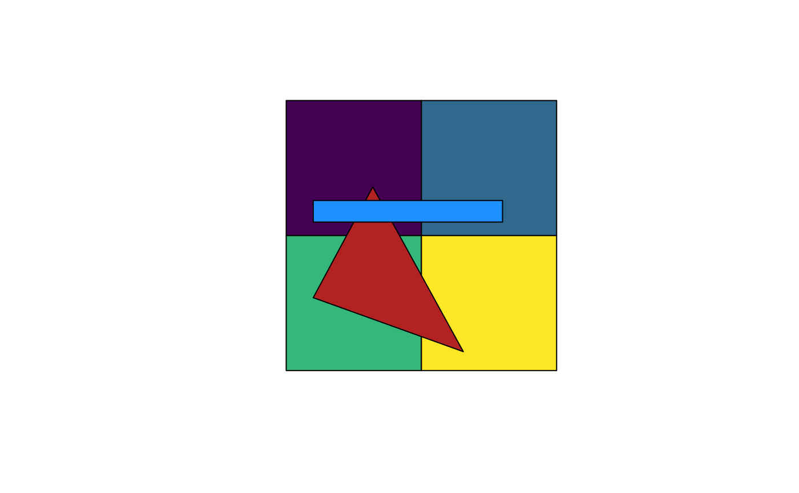
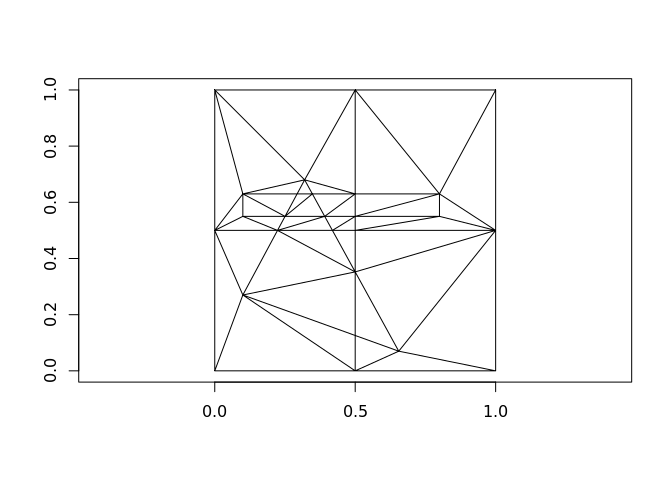
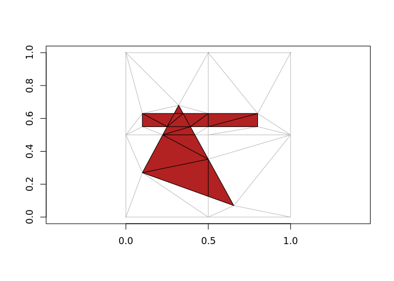
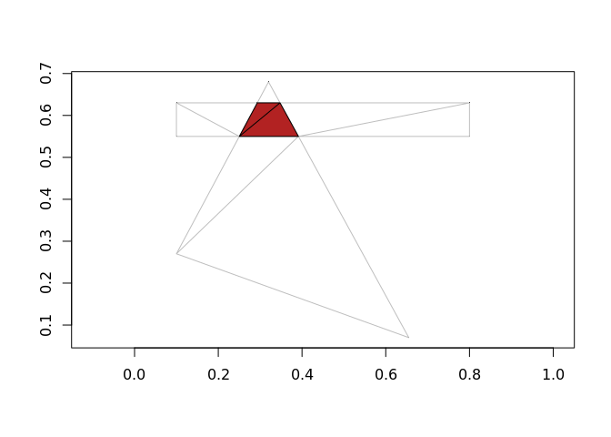
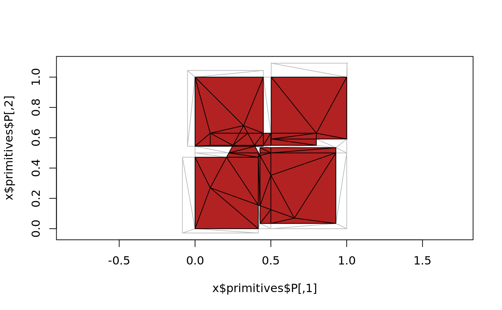
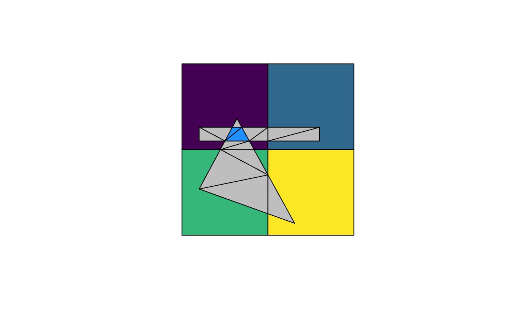
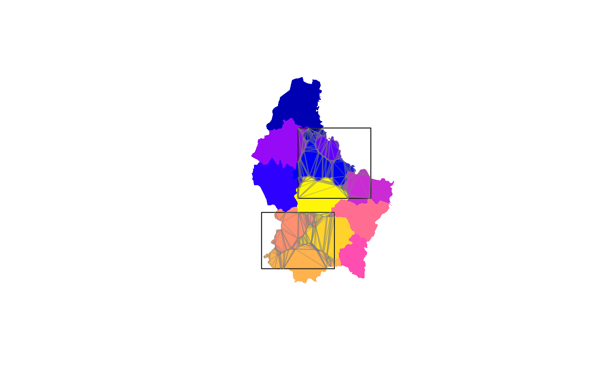

The goal of polymer is to provide flexible and intuitive overlay methods familiar to GIS workflows. This works by doing the obvious finite-element decomposition of all component edges in all inputs into triangles. Then triangles instances are classified (by point-in-polygon lookup) by inclusion within paths within objects within layers.
The resulting mesh and inputs and indexes can be used to derive complex relationships between layers. polymer is modelled on the concept of data fusion from a now defunct commercial package called Eonfusion. It relies on the RTriangle package which is licensed CC BY-NC-SA 4.0, but could be modified to use the less restrictive decido package. Specialist forms of this might choose other engines - the crux is constrained triangulation, and for planar shapes high-quality triangles aren’t required so long as all inputs edges are preserved.
This is analogous to what GIS packages variously call “overlay”, “topology overlay”, “intersection” and so on. The difference is we want a single mesh that has information about all of its inputs in a lossless form. We can derive general information from the mesh and the links to sources without simplifying everything to a single result that has no connection to the sources.
WIP
- spacebucket() needs a new name - polymer()?
- holes are identifiable but not yet explicitly classified
- extend sb_intersection to return the right parts
- write sensible return types and input attributes
Installation
You can install the development version from GitHub with:
Example
This example takes three built in data sets and merges them together as an indexed mesh.
library(polymer)
plot(sf::st_geometry(A), col = viridis::viridis(nrow(A)))
plot(sf::st_geometry(B), col = "firebrick", add = TRUE)
plot(sf::st_geometry(C), col = "dodgerblue", add = TRUE)
## summarize the contents
(bucket <- spacebucket(A, B, C))
#> SPACE BUCKET:
#> Layers: 3
#> Polygons: 6
#> Triangles: 42
#> (Overlaps: 15)
## show the components pieces
plot(bucket, asp = 1)
The next stage is to then pull out the intersection layer, currently we only have a function to plot the identified triangles - but work to come will identify them individually and copy attributes from the input layers appropriately.

## it works with pairs or with multiple layers
polymer:::sb_intersection(spacebucket(A, B), col = "firebrick")

set.seed(sum(match(unlist(strsplit("spacebucket", "")), letters)))
## number of layers is arbitrary
polymer:::sb_intersection(spacebucket(C, B, A, sf::st_jitter(A, 0.1)), col = "firebrick")
A function n_intersections will pull out any >=n overlaps.
plot(A["layer"], col = viridis::viridis(nrow(A)), reset = FALSE)
plot(B, add = TRUE, col = "hotpink")
plot(C, add = TRUE, col = "firebrick")
plot(A["layer"], col = viridis::viridis(nrow(A)), reset = FALSE)
plot(B, add = TRUE, col = "hotpink")
plot(C, add = TRUE, col = "firebrick")
sb <- spacebucket(A, B, C)
plot(n_intersections(sb), add = TRUE, col = "grey")
#> Warning in plot.sf(n_intersections(sb), add = TRUE, col = "grey"): ignoring
#> all but the first attribute
plot(n_intersections(sb, n = 3), add = TRUE, col = "dodgerblue")
#> Warning in plot.sf(n_intersections(sb, n = 3), add = TRUE, col =
#> "dodgerblue"): ignoring all but the first attribute
x <- n_intersections(sb, n = 3)
## see how we know the identity of each input layer
tibble::as_tibble(x) %>% dplyr::select(-geometry) %>% tidyr::unnest()
#> Warning: `cols` is now required.
#> Please use `cols = c(idx.data)`
#> # A tibble: 6 x 4
#> idx.triangle_idx path object_ layer
#> <int> <int> <chr> <int>
#> 1 27 1 W9erlW NA
#> 2 27 5 U0UPUI NA
#> 3 27 6 p9902a NA
#> 4 39 1 W9erlW NA
#> 5 39 5 U0UPUI NA
#> 6 39 6 p9902a NAplot(soil, col = sf::sf.colors(n = nrow(soil)), border = NA, reset = FALSE)
plot(field, add = TRUE, col = NA)
soil_field <- spacebucket(soil, field)
plot(n_intersections(soil_field), add = TRUE, border = rgb(0.5, 0.5, 0.5, 0.2))
#> Warning in plot.sf(n_intersections(soil_field), add = TRUE, border =
#> rgb(0.5, : ignoring all but the first attribute
From vignette("over", package = "sp").
library(sp)
library(sf)
#> Linking to GEOS 3.7.1, GDAL 2.4.2, PROJ 5.2.0
x = c(0.5, 0.5, 1.0, 1.5)
y = c(1.5, 0.5, 0.5, 0.5)
xy = cbind(x,y)
dimnames(xy)[[1]] = c("a", "b", "c", "d")
pts = SpatialPoints(xy)
xpol = c(0,1,1,0,0)
ypol = c(0,0,1,1,0)
pol = SpatialPolygons(list(
Polygons(list(Polygon(cbind(xpol-1.05,ypol))), ID="x1"),
Polygons(list(Polygon(cbind(xpol,ypol))), ID="x2"),
Polygons(list(Polygon(cbind(xpol,ypol - 1.0))), ID="x3"),
Polygons(list(Polygon(cbind(xpol + 1.0, ypol))), ID="x4"),
Polygons(list(Polygon(cbind(xpol+.4, ypol+.1))), ID="x5")
))
pol <- st_as_sf(SpatialPolygonsDataFrame(disaggregate(pol), data.frame(a = 1:5)))
(polb <- spacebucket(pol[1, ], pol[2, ], pol[3, ], pol[4, ], pol[5, ]))
#> SPACE BUCKET:
#> Layers: 5
#> Polygons: 5
#> Triangles: 19
#> (Overlaps: 4)
plot(polb, reset = FALSE)
#> Warning in polypath(head(x$primitives$P[t(cbind(x$primitives$T,
#> x$primitives$T[, : "reset" is not a graphical parameter
plot(n_intersections(polb), add = TRUE, col = rgb(0, 0, 0, 0.3), border = "firebrick", lwd = 2)
#> Warning in plot.sf(n_intersections(polb), add = TRUE, col = rgb(0, 0, 0, :
#> ignoring all but the first attribute
Please note that the polymer project is released with a Contributor Code of Conduct. By contributing to this project, you agree to abide by its terms.